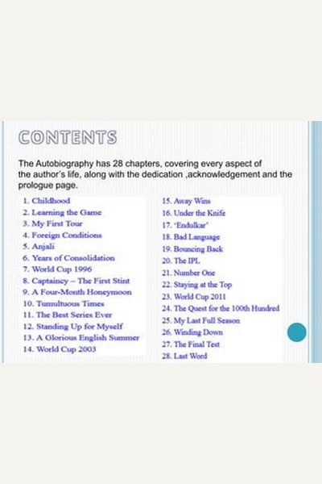

Library › Self-Improvement
Playing It My Way — Summary & Key Lessons

22 years, 100 centuries, one obsession. Sachin on practice, pressure and purpose.
📖 OPEN THE FULL INTERACTIVE BREAKDOWN →🌐 Read it in Hindi, Hinglish, Gujarati, Tamil & 22 more languages — free, with audio.
💡 The Big Idea
Greatness is not a gift you are born with — it is a habit you build daily. Sachin's career is a masterclass in doing the boring things brilliantly: net practice when nobody watches, respect for opponents, discipline off the field, and treating every match as if it matters. Longevity is not luck; it is a system.
🧠 The 6 Key Lessons
Lesson 1: The Boring Work Nobody Sees
Chapter 1: The Early Years
Sachin's greatest weapon was not talent but net practice — hours of shadow batting, throwdowns and corrections when no one was watching. While others celebrated performances, he analyzed his own innings frame by frame. The routines that look boring from outside are exactly what makes the extraordinary possible from inside.
📖 Example: As a teenager Sachin would spend entire mornings at Shivaji Park with coach Ramakant Achrekar, who made him practice until his hands bled. On days he scored a century in a match, Achrekar still made him bat in the nets the same evening. That unglamorous… Read the full example →
⚡ Do this: Pick the one skill that matters most and schedule 30 minutes of focused, deliberate practice for it every single day — no exceptions.
Lesson 2: Respect the Game, Not Just the Result
Chapter 2: Making It to the Top
Sachin treated cricket as something larger than himself — never walking out with a bat that was not ready, never questioning umpires, never letting frustration leak onto the field. Respect for the craft protects you from the arrogance that ends careers. The game stays with those who stay humble in front of it.
📖 Example: When bowlers tried to rattle him with bouncers, Sachin responded with a smile and a straight drive instead of retaliation. Australian captain Allan Border later admitted they deliberately targeted him because he was the one batsman who could hurt them — and… Read the full example →
⚡ Do this: Before your next big moment, ask: 'Am I respecting the craft itself — preparation, rules, opponents — or only chasing the win?'
Lesson 3: Pressure Is a Privilege
Chapter 3: Carrying the Nation
A billion people watched every Sachin innings, yet he framed pressure as an opportunity rather than a burden. He prepared so completely that match day was just the execution of plans already rehearsed. Pressure does not disappear with experience; you simply get better at converting it into focus.
📖 Example: In the 2011 World Cup, with the entire nation expecting a trophy, Sachin stayed calm in the dressing room, watched his routines, and delivered crucial runs — then called the final victory 'the proudest moment of my life'. The same pressure that broke others… Read the full example →
⚡ Do this: Write down your one biggest pressure situation and rehearse your ideal response to it three times before it arrives.
Lesson 4: Discipline Off the Field Decides What Happens On It
Chapter 4: The Fitness Years
Sachin's longevity came from what he did away from the crease: strict sleep, controlled diet, obsessive fitness work and saying no to the excesses that derailed gifted contemporaries. Your off-hours are the foundation of your on-hours. Nobody sees the gym, but everyone sees the results.
📖 Example: After his 1999 back injury, Sachin rebuilt his game around fitness, even changing his batting stance and spending months with physiotherapists. While several brilliant peers faded by their early 30s, he played world-class cricket into his 40th year — proof… Read the full example →
⚡ Do this: Audit your week: what you eat, when you sleep, how you recover. Fix the weakest off-field habit this month.
Lesson 5: Hunger Never Retires
Chapter 5: The Final Years
Even after every record was broken, Sachin still arrived at practice first and left last. He judged himself against his own standards, not the scoreboard, which kept him hungry when motivation could easily have faded. Champions do not retire from effort; they re-define what effort means each season.
📖 Example: In his final year, with nothing left to prove, Sachin still spent hours in the nets before the last Test at Wankhede. He scored 74 in his farewell innings — not a century, but a demonstration that a man who had done it all still wanted to do it well one more… Read the full example →
⚡ Do this: Set one standard that has nothing to do with outcomes — like quality of practice — and refuse to lower it even when you have 'won'.
Lesson 6: Stay Coachable at Every Level
Chapter 6: Behind the Scenes
From a street kid in Mumbai to the most capped player in history, Sachin kept seeking correction — from coaches, seniors, even juniors with new ideas. Ego closes the door to growth; coachability keeps it open. The day you stop accepting feedback is the day you start declining.
📖 Example: Late in his career Sachin would still ask young bowlers in the nets what they thought about his footwork, and he actively sought advice on his tennis elbow from specialists across the world. His willingness to be a student, even as a master, is why his game… Read the full example →
⚡ Do this: Ask one person who knows your work for one piece of honest criticism this week — and act on it without defending yourself.
✅ 5-Step Action Plan
- Schedule daily deliberate practice on your core skill, separate from your regular work
- Write your response to your biggest pressure situation and rehearse it
- Fix one off-field habit (sleep, food, recovery) and track it for 30 days
- Ask for one piece of honest feedback every week and act on it
- Create a personal standard of excellence that is independent of results
⚠️ When This Doesn't Work
⚠️ When this doesn't work: If you are already burnt out or injured, adding more practice and discipline can make things worse — recovery comes first. Sachin's system worked because he had world-class support staff, nutrition and physiotherapy. Without basic rest and medical care, 'more discipline' is just self-harm.
💀 The Graveyard Proves It
🏈 Johnny Manziel — The First-Round Talent Who Didn't Study the Playbook. Burn: An NFL career in 2 years. Read the full case study →
💬 Best Quotes from Playing It My Way
- “I never played for records. I played for the joy of batting.”
- “The best way to silence criticism is to let your bat do the talking.”
- “Practice does not make perfect. Perfect practice makes perfect.”
Interactive version: mark lessons as read, listen in your language, share quote cards.